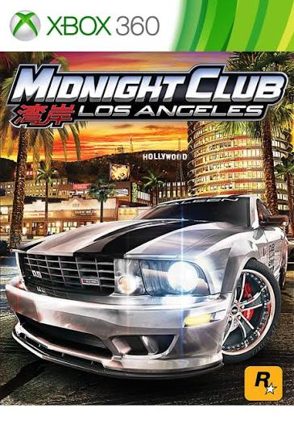
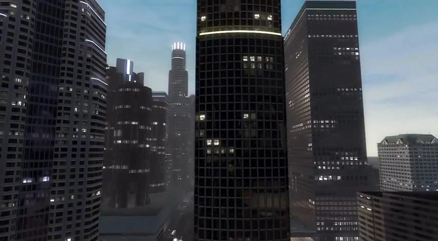
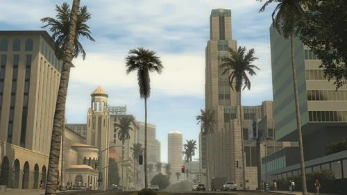
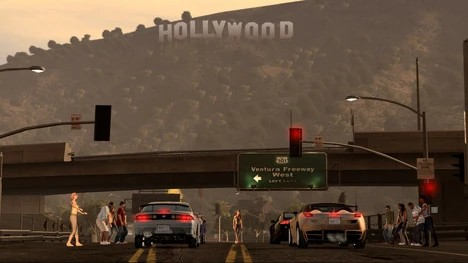
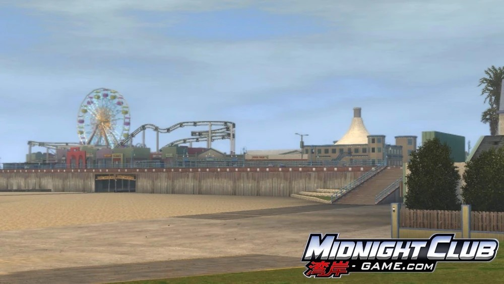
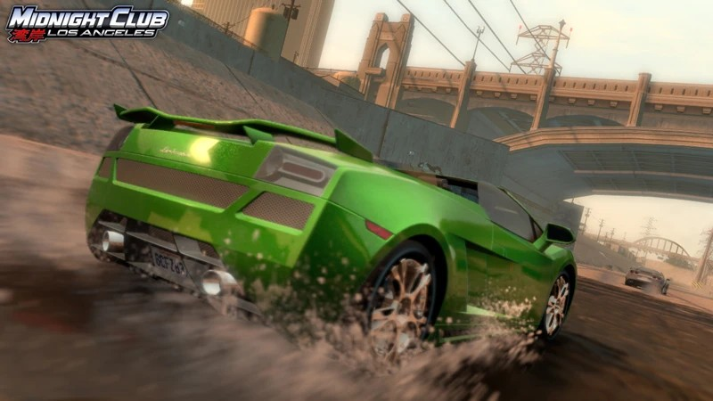

There is no level select and no gated map. From the moment you pick a starter car, the entire recreation of Los Angeles is drivable.

Downtown - Dense high-rises and wide, high-speed avenues, home to the Downtown Tournament.
Hollywood - Neon signage, nightlife, and the Sunset Strip.
The Hills - Winding canyon roads above the city that reward precision over raw speed.
The Beaches - Venice and Santa Monica, with long scenic straights running along the water.
South Central - Added after launch as free DLC, with tighter residential streets and its own lowrider culture.The South Central expansion added an area roughly a third the size of the original map, including real Los Angeles landmarks such as the USC campus, the Shrine Auditorium, and the LA Memorial Coliseum.